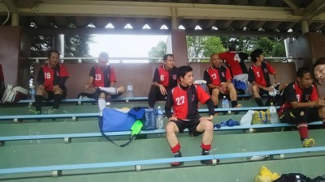

皆様暑い中、お疲れ様でした！
今日は3本目の試合でゴールすることが出来て最高でした。
中盤のなかやんからパスをもらって前を向いたら、トシキさんが見えて少し前にドリブルしてからパスをしてオフサイドラインあたりで待ってたら、トシキさんからいいパスをもらいました。それでキーパーの位置を見て左サイドに思いきりけったら手ではじいたので防がれたかと思ったのですが、そのままゴールにころがんでくれました。めっちゃ嬉しかったので小さくガッツポーズしてましたよ。
その前のゴール上に外したときは、やってもうたという気持ちやったんですけど、何か自然にバンザイしてました(笑)
でもそのあとは電池切れになってしまい、あんまり動けてなっかたような気がします。それにしても今日は日陰のベンチでほんま助かりましたー。
今日も暑かったなあ。まあまだ観客席で日陰があったのがましやったかなあ。
今日は久宝寺緑地で３チームでのフレンドリーマッチを行いました。今日はありがたいことに早退も含めて１６名？１７名？の参加があり助かりました。
お相手頂きました、SPARKさん、加賀田FCさん暑い中本当にありがとうございました。
今日は変則で１チーム当たり４本で１２分して２分給水タイム取ってまた１２分という形でしました。給水はほんと必要でしたね。
さて今日もハイライシーンや得点シーンを中心にカキコしたいと思います。1本目は加賀田FCさんとでした。以前に対戦させて頂いた時もそうでしたが、組織的な動きと失礼ながら平均年齢がおそらくうちより上だとは思いますが運動量がありましたね。
攻めたり攻められたでしたが、得点は恒例？早退の（家との両立大変な中早退でもいつも参加助かります）テラさんがハットトリックをかましてくれました。１点目は右でボールを受けて、そのままドリブリしてかなり強烈なミドルシュートを決めてくれました。２点目は中央でボールを奪ってそのままドリブルして冷静に決めてくれました。３本目はセンターバックしてた僕からむらっちへ鬼パスをむらっちがヘディングで落としてくれてそれをテラさんがキープして少しドリして冷静にシュートという感じでした。久々のハットトリックでしたね。ただテラさんがハットトリックをしたチームさんは相手をしてくれなくなるという都市伝説が（笑）、よかったら感想お待ちしています。
後は右の中盤からタカさんがクロスを入れたのをむらっちがヘディングシュート、惜しくもゴールバーに阻まれましたが、ほんとむらっちはヘディングが上手だと思います。
あとわだっちが左からいいクロス上げたり、オフサイドになったけどゴール前に詰めていたりといい動きしていました。
取られた１点はもったいなかったなあ。高いバウンドのボールをとくさんがキープしようとして、それをとられちゃって、その後ろに僕が準備はしてたんだけど、ボールを相手に上に超えられて、まんちゃんへの言葉が遅くなってしまい、結局まんちゃんもかわされて１点取られました。
個人的には予想外のボールに対応出来なかったのが悔いが残りました。反省です。
２本目はスパークさんとでした。この試合も一進一退でしたが、いい攻撃もありました。僕の殺人２号コーナーをタクちゃんがナイストラップしてくれて、そのまま後ろから走りこんできたわっちがミドルシュート、キーパーに止められちゃいましたがいい感じでした。
うちは縦パスも多かったですね、トシキが何度かオーバーラップしてくれて惜しかったシーンもありました。
個人的には右サイドから攻めあがって、左サイドからわだっちが来ているのが見えたからゴロでインサイドで逆サイドにパスを出したんだけど足の痛みが怖くてあまり強く蹴れなくて緩いボールになって結局中央から上がってきたタクちゃんが最後触ってくれたんだけど、キーパーも出てきててセーブされちゃいました。もっと強いボール蹴ってたらわだっちにいい感じだったのになあ、すみません。m(__)m
でもある意味今日一番のプレー、今までにもなかったプレーでの得点がありました。相手ゴール前で浮き球の処理でセンターバックがさがりながら、キーパーが出てくるのを待っている感じの時にそのボールを追い掛けていたタクちゃんが、ジャンピングボレーシュート？相手のデフェンスの顔くらいの高さで体がほんと完全に真横になるくらいの体制からシュートを打って、緩かったけどキーパー出てきてたので無人のゴールへまっしぐらでした。あの身体能力は凄いなあ。あれはとっさに思い付いたのかな？ぜひ解説をお願いします。（笑）
反対に１点取られましたね。これももったいなかったなあ。まんちゃんがいつも通り果敢にペナルティエリアの外くらいまで飛び出してくれて、浮き球をトラップで前にクリアしてくれたんだけど、運悪く相手チームへ、そのままロングループシュートを決められました。まんちゃんの動きがもったいないとかじゃなくて、あの位置だとセンターバックがきちんとフォロー出来たと思うので、お互いの声かけとかをデフェンス陣は心がけましょう。僕も含めてだけど。
３本目は加賀田FCさんとでした。まっとんが右サイドで躍動してましたね。試合開始くらいにドリブルしてキーパーと１対１に、おーって思ってたらシュートははるか上へ、バンザーイしてたけど無しよ状態やわ（笑）
全体的に攻めていた感じがします。特にトップのまえちゃんにボール集めて、それをまえちゃんがスルーパス出したりとかでいい形がありましたね。前線でキープ出来るのはほんとありがたいですね。そのまえちゃんが左のゴールラインあたりから超ループセンタリングをトシキがダイレクトで対応したけどボールはあさっての方向へ、あれはシュートやったのかな？（笑）
まっとんからのパスを受けて、トシキが振り向きながらのナイストラップをしてそのまま角度の無い所からシュートするも惜しくも外側のサイドネットでした。
そのトシキ、まっとんコンビで得点が取れました。綺麗なワンツーでしたね。まっとんがトシキにパス、そのまま、まっとんは前に走って、パスを受けたトシキがまっとんの動きを見ながら素晴らしいパスを出して、それを受けたまっとんが少しドリしてシュート、キーパーの手をはじいてお見事なゴールでした。一本目の外した後のバンザイあったけど、決めた時は無かったような、そのあたりのお気持ちをカキコお待ちしています（笑）
守りではタカさんのスーパーバックが目立ちました。とことん攻撃を止めてくれてました。わっちもいいバックしてくれてて安定感がありましたね。
最後ちょっと面白かったって言ったら失礼だけど、まえちゃんがキープしてて右サイドのタカさんが前が誰もいないので、果敢にオーバーラップ、見ているほうも「オオ」って思ってたらパスが出る前に終了の笛が・・・、寂しさを感じました、お疲れ様でした。（笑）
４本目はスパークさんとでした。かなり攻められた感が個人的にはありましたね。ハーフから何度相手を追い掛けたんだろうか、バックに変わったら体力無くて動かれへん（涙）
１点目はいつもどおりの運動量で頑張ってくれていたわだっちがペナルティエリア内でファールとなってPKになりました。まんちゃんがコースはあってたんだけど、相手のボールが強烈で追いつかなかったですね。まあ、仕方ないなあ。あれはコースは読めてたのかな？今日は暑い中、よく動いてくれました。
んで、負け越しになったので、どうにかと思ってたら前線のパス回しの中でむらっちが、キープして相手チームのキーパーやバックは逆サイドにクロスが来るって感じで警戒してたところに、体の向きは結構逆サイド気味だったのが、ペナルティエリア外くらいから意表をついたトゥキックでのシュート、キーパー一歩も動けず、お見事でした。むらっちも何だかんだで得点取ってるよね、テラさんとの争いになるかもですね。それに比べて、コーナーキックで左足でキックしたらゴールの後ろに飛んで行って、「チッ」って言われるポンコツは駄目やなあ（涙）
勝ち越しの１点はやっぱりタクちゃんでした。何度もゴール前でドリブルしてて、相手デフェンスの執念で止められてたけど３度目の正直？右サイドに流れながらスピードで振り切って、そのまま左サイドの方にゴールを決めてくれました。
トシキにタクちゃんは最後助っ人も対応してくれてお疲れ様でした。若さっていいなあ。
まあ、そんな1日でした。参加された皆さんお疲れ様でした。
最後に話は変わりますが、ちょっと真面目な話を。今日は多くの参加がありましたが、それでも天気とかもあってみんな疲れてました。そんな中最後の審判する時に、僕から普段あまり行っていない人お願いしますって何度も声かけしましたが、結局は普段良く行ってくれているまえちゃん、なかやん、ゆっきーが対応してくれました。線審はともかく、主審はほんと限られた人しかしていない現状があります。普段あまり行っていない人の回数のラインが不明かもですが、僕はほぼ毎回してますし、いつも率先して手を上げてくれる人は結構な回数をしてくれてます。審判回数とかチェックは出来ればしたくありません。しんどい中ですが、前回してないから今回は審判しようとか久々の参加だから審判で協力しようとか前向きな人が多くなることを願ってます。ただ今日、審判をしなかった人が普段から全くしていないということは思っていませんので今後ともチーム運営にご協力をお願いします。
１０連休って羨ましいどすなあ、今日も早退でどんな悪だくみをしに行ったのかな（笑）
今日はお盆の週ってことで少なくて開催か微妙でしたが結果的には９名の仲間で楽しくボール蹴ることが出来ました。
最初は鳥かごでアップしてました。まえちゃんにはまさん、なかやんとまっとんが集中砲火食らってたような気が（笑）、でもなかやんは一回やり返してたっけ？（笑）。少ない中でも笑いがあって楽しくてやっぱりボール蹴ってていいなって思ってました。
その次はマイ小道具使ってゲーム方式で遊びました。初めて使ったけど中々立派なもんでした。僕と、ハマさんとなかやんチームは糞弱かったけど、後の２チームは白熱した戦いをしてましたね。
また人数が少ない時に持ってこようと思いますが、いろんな要素の練習になるので楽しかったです。
さて、どんなことしたかはとりあえずは秘密で（笑）、また参加時にする時を楽しみにしておいてください。
その後は早退の方も居たので、４対４、フリーマン１名でしました。フリーマンはまっとん、タクちゃん、タカさんとかしてくれたけど、まっとんはほぼ一方の味方になってたよな（笑）
今日の見せ場はハマ大明神でした。なぜか一方のゴールばっかりでしたが、ハマさんがナイスランをして、ラストパスが来るんだけど、「あっ」との言葉が繰り返してゴール枠の左右にずれたり、ギリギリでボールが止まったりと散々でしたが、最後は綺麗に決めてくれましたが笑いがわかってないな（笑）、それにつられてまえちゃんも２回ほど同じ感じやったけど、まえちゃんの場合はパス自体が難しいのが多かったかな。
最後は８人になったので４対４で、まっとん、なかやんコンビのエッフェル塔攻撃が炸裂して終了し、いつもより早めに終わりました。
来週は試合です、まだ参加が不確定の方、なるべく参加のほどよろしくお願いします。
本日、参加された皆さんお疲れ様でした。
P.S ほっしゃん、土手の爆走・・・・捕まんで（笑）
あちかったなあ・・、最高気温３８℃っておかしいよね。
大塚は久々やったけど、駐車場や水場とかが遠くなってて、距離は遠いけど島本の方が現地に着いたら便利だったわ。
今日はそんなくっそあっついなか、サッカーバカがなんだかんだで合計１９人集まりました。２０日の試合の時も頼むよ～。
今日はしかもグランド４時間で、日陰もあまり無く、風が少しあった時もあったけど、汗が止まりませんでしたね。マイグッズ持ってきて少しは貢献出来て良かったかなあ。
最初は鳥かごでアップしてて、その後はポストシュートしました。んでいろんな練習メニュー考えてたんやけど、テラさんが早めの早退でも急遽参加してくれたので、そのまま紅白戦もどきを延々としてました。途中かきさんも早退やったけど、結構休憩長めに入れながら、なんだかんだで１２時５０分くらいまでしてて、ふらふらでしたね。
ポストシュートはポンコツは駄目やったけど結構いいシュートを打ってましたね。
紅白戦はごろうが意味不明な転倒したことくらいしか覚えとらん、あとはゴール前で絶叫してたっけ？後は暑い中でもタクちゃんのスピードがえぐかったのと、とくさんがタクちゃんを何度か止めたりしてたし、まんちゃんもナイスキーパーもあったね。
そんな感じの一日でした。参加された皆さん、お疲れさまでした。
今日は一日帰ってからだるくて何にも出来んかったなあ。明日台風来るからみんな気を付けてやあ。日頃の行いが悪い人は風で飛ばされてきた一斗缶にぶつかるで～。
皆さん、昨日はお疲れ様でした。
まっさんが感想をとの事なのでちょこっと書かせていただきます。
７月とはいえ、真夏の暑さを感じさせる一日で
今日は日焼けのせいか酔っ払いのような顔で仕事をしてました。
初めての試合に参加させていただきありがとうございます。
自分はサッカーの試合チョ～久しぶりで最初はワクワク感一杯でしたが
グランドに立つと暑さと緊張で何も出来ませんでした。
ごめんなさい m(__)m
やっぱり歳ですかね(笑)
この暑さの中、皆さんのスタミナにはビックリです。
１試合目は観戦させていただきましたがタカさんの先制点で始まり３試合目むらっちの
アグレッシブな攻撃やタクちゃんの俊足な攻めはさすがだなって感じでした。
キーパーのまんちゃんも全試合出られて４試合目以外は無失点！
自分が試合に出てるときは皆さんの声掛けをもらいながらバックをさせていただき
なんかチームの一体感も感じられ楽しかったです。
家に帰れば大学生の娘に日焼けした顔をみて”いい年こいて何してんの”ってバカに
され、その横で嫁が大笑いでなんなんって感じでした。<(｀^´)>
楽しい１日を過ごさせていただきありがとうございます。
今後とも足手まといにならない様に頑張りますのでよろしくお願いします。
＊今、会社で仕事のふりして書いています。(^^)v
以上
どこが曇りやねん。まあ半分くらいはそうやったかもだけど、うちの試合の時は結構晴れ間になってた（涙）
個人的に７年ぶりくらいの、うちのチームでは初めての島本グランド、思っていた通り迷うというか通り過ぎる人がほとんどでしたね。グランド的には真ん中が土で周りが芝生って感じで三島江とかもそうだけど、まあまあ広くコートを取れたのと、何より水道とトイレがすぐ近くにあるのは良かった。特に水道は今日は命の泉状態でしたね。ほんと風がほとんどなくて湿度が高くてきつかったですね。
そんな状況の中、当初はポンコツ入れて何とか１１名って感じが１時間だけでもと遠方からテラさんやつよぽんが来てくれたり、助さんが急遽遅れて参加してくれたりで、おかげで怪我を抱えていたり、体調的にしんどい時に休んだり出来たのはありがたかったです。
次回の試合の時もたとえ１時間でも可能な方はよろしくお願いします。もちろん、参加していない方がわざと欠席とかは思ってはいませんが可能な方は努力してもらえると助かります。
今日はうちの主催でジェネシスさんとアモールFCさんをお招きして、フレンドリーマッチを行いました。ほんと暑い中、遠方にもかかわらず対戦して頂きありがとうございました。今後も変わらぬご交誼のほどよろしくお願い致します。
いつも通り、試合ごとに得点シーンやハイライトを伝えていこうと思います。
１試合目はジェネシスさんとでした。ドピーカンの中でそれだけでしんどかったですね。全体的に攻めたり、攻められたりとありましたが、まっとんが縦パスからの惜しいシーンとかありましたね。うちはどちらかと言えば縦パスが多かったですが、ジェネシスさんはサイドからの攻撃とかいい感じでした。特に若くて上手な子がワントップに居たのでバックしてた僕やわだっち、トシキとかで抑えるのに必死でしたね。
先制点はうちでした。相手のゴール前でこぼれ球をタカさんがダイレクトでシュート、いつもみたいなライナーでは無かったですが、回転が掛かっていてキーパーがファンブルしてそのままゴールとなりました。
唯一の参加だったテラさんも果敢に攻めたりして惜しいシーンもありましたね。
２本目からは給水タイムを途中で入れてしました。２本目はアモールFCさんとでしたが、連続での試合の疲れもあってかバックがバタバタしてた感じでうちは全体的に攻めてましたね。
前線でもプレッシャーが大切というのをむらっちが身を持って実践してくれました。相手のバックにむらっちがプレッシャー掛けて、キーパーへのバックパスになったんだけど、キーパーがトラップが大きくなって、さらにプレッシャーにいってたむらっちがボールを奪って、冷静に無人のゴールへトゥキックで決めてくれました。
むらっちからのヘディングパスをタクまーるが追いかけるもギリギリでキーパーに取られたんだけど、その後、フリーキックになってタクちゃんが獰猛な目をして直接ゴールを狙ったりもありました。
わだっちが左サイドを上がって行って、そのままライナークロスを中央に居たまっとんがヒールシュート予定？よくわからずにやにやしてた（笑）、あとタクちゃん、トクさん、まっとんへのパス回しもいい感じでしたね。
トクさんは今日が初試合、いかがでしたか？良ければ感想をお待ちしています。
２点目もうちでした。左サイドバックしてたトシキから前線の右サイドのタクちゃんへのロングパス、いつも通りオフサイドにならないように走りこんで、今度はキーパーより先に追いついて、冷静に浮き球を調整して、キーパーの上を超るループゴロシュートが決まりました。今日はトシキが攻めに守りにと大活躍で、家が近くで差し入れでガリガリ君持ってきてくれて、これからも持ってくるって言ってくれたんでみんなゴチになりましょう（笑）
３点目は２点目と同じような感じでしたが、今度はむらっちからのパスを同じようにタクちゃんが追いついて冷静にキーパーとゴールの間に決めてくれました。
外から見てて、ゴールは嬉しいけどたいがいよく走らされてたなあって思ってたけどやっぱりタクちゃんは若い、トシキもだけどね。今日のコンディションとかだと４０過ぎたら動けましぇん（笑）
んで、もう１点入りました。内容的には１点目と同じく、むらっちがプレッシャー掛けてキーパーへのバックパスが緩かったのを奪ってそのままゴールでした。
３試合目はジェネシスさんとでした。双方ともに得点は入りませんでしたが、右ウイング気味のまえちゃんに僕もだけどなかやんとかもボールを集めてましたね。
僕は見せ場はまえちゃんへのクロスと、後はオフサイドギリギリ？でボールを受けてドリブルしてて、怪我の影響で思いっきりシュートを打つのが怖くて、キーパーの上をループでと思ったら変なところに当たって、ゴールの左側にそれていきました（涙）。
タクちゃんの殺人コーナーキックに僕がめっちゃヘディングで合わせようと思ったら、キーパーがいいタイミングで前に飛び出してパンチングされたんだけど、それがなくてもまとぞうに足を引っかけられたから無理やったかな（笑）。まああれも二人がかぶったから仕方ないかな？守りもだけどセットプレイではかぶらないように動かないと駄目ですね。
４本目はアモールFCさんとでした。いやあ、２本目の逆襲されましたね。若いメンバーの個人技で抜かれて、左の角度の無い所から２発、右の同じく角度の無い所から１点決められました。まんちゃんも必死にセービングしてくれたけど、あの角度はしゃあないですよ。
全体的に攻められてた感じもあったけど、４本目から参加したつよぽんが右サイドをかけあげってアンダークロス、それを中央のなかやんがヒールでダイレクトで流したんだけどそこに味方が居無くて惜しかったり、いつも僕とかも５倍の体力はあるんちゃうかと思っているわだっちがゴール前の中央で相手に囲まれながらもボールをキープ、最後は倒れこみながらシュートするも無常に右ポストにコーン、自虐で「持っていない人」って言ってたけど（笑）
んで、当初はその後は混合のエキシビジョンマッチを考えていたんだけど、給水タイムで時間が押してたのと、怪我や体力とか考えて実施しませんでした。
まあ、そんな一日でした。ほんと参加して頂いた方、ありがとうございました。お疲れ様でした。
今日はいい意味でお天気がいい感じでしたね。昨日だったら地獄やったかも？ずっと曇りで風も結構あっていい感じでした。
今日は遅刻、早退を合わせて最大で１８名の参加がありました。時間前にきちんと来る人、９時くらいにひょっこり来て「迷っちゃいました」とかたわごとを言う人（風呂入らんと心を洗えって言われてた人（笑））、遅れますのメールの時間自体がもう集合時間の後の人とか居ましたが、基本集合時間はきちんと守ってくださいね。
それと以前からお話ししているように出欠登録はできる限り早めにお願いします（特に試合）
んで、そんな大勢だったので、まあシュート練習とかは来月出来るしということでいきなりプチ紅白戦をしました。
僕は当初見学予定でしたが、やっぱり大勢いるとうずうず・・・こんなことをしているから治らんのだろうなあ（涙）。怪我で参加出来なくなってもグランド確保や試合の調整、そしてなぜか飲み会の感じだけは続けてないと駄目らしい。ほんまに出来んようになったら、そんなん辛くて出来るかああああああ。
ゆっきーがぐっきーしたのがちょっと心配でしたが（あれはすがちゃんが見え無い所でコスいエルボー入れたんちゃうかな（笑））、まえちゃんの容赦ない口撃の方がきつかったかも。まっとんとなかやんもやられてた。
なかやんの重戦車アタックに結構みんなやられてたなあ（笑）
後はなぜか敵味方関係なく「はまさん」の大合唱があったりしてたね。さすが棟梁人気もんでんなあ。
プレーでは右サイドからのほっしゃんからのライナークロスをトシキが中央で合わせて豪快に決めたのが印象的やったなあ。あとむらっちだったかな？いいロングシュートもありました。
僕はキーパーまっとんに向かってめちゃロングシュート狙ったんやけど、足がやっぱ不安で抑えられずゴールバーの上へ・・・まあ怪我無くても一緒やろうけど。今日はそういったゴールの上へのシュートが特に多かった気が・・・（笑）
とくさんも惜しいヘディングとかありましたね。
あとはチームビブを２回連続で忘れて借り物のビブ着る気満々でそのチームがビブになったのもあったなあ。２度あることは３度あるにならんようになあ。
んな感じで最後の２本は長めにしてあっというまに時間が過ぎて終わりました。
来週は試合です。しかも初めての行く人も多いと思うので、再度ホームページからでもリンクしているので場所の確認（特に入り口）をしておいてくださいね。
本日参加された皆さんお疲れ様でした。（試合の時もこれくらい来て欲しいなあ）
最後に、まとぞうビンテージシルバーミニカー見れんようになって寂しいなあ・・・。
先日の試合、参加された皆さんお疲れ様でした！交代枠があったから何とか乗り切れました。帰宅してから軽い熱中症みたいな感じで頭がボ～っとしていました。これからの季節は熱中症には充分注意しないとですね！
まっさんのコメントにありました件。
どーでもいい話ですが、何かと言いますと、背番号を『77』→『22』へ変更しました。自分の誕生日が22日で、野球やフットサルで過去にユニフォームを作った時、全て22番で作っており、エガリテでもと思っていたのですが、当時あいにく22番が使用されていて、何となく形が似ているという理由で77番を選びました。そして何気に見たホームページのメンバー表で、あれ？22番あいてるやん！どなたか存じませんが、退部されたのでしょう。あざっす！即発注しまして、前回の練習が始まる前にこっそり、まっさんより新ユニを受け取り（わだっちにはネタバレしていましたが）、当日着て、誰か気付くかやってみようとの事。誰からも指摘は受けなかったですよ！背番号は誰が何番かなんて全部覚えてないと思いますし（笑）そりゃそうか。
背番号の変更は、ただの自己満足だと思っていませんか？いやいや、私にとっては、この背番号で試合に出ると、モチベーションは上がるし、動きも良くなります。さらにスパイクも新しくなり、試合の日を待ちに待って、ようやく念願の22番のユニフォーム着て、よっしゃー行くぞー！！
結果！何も出来ませんでした！
自己満でした！すみません！！
以上！

今日は太陽が出ていなくて良かった反面、湿気が多くてジメジメしてて汗が止まらなかったですね。
今日は初顔合わせ、お相手頂いた4：2さん、スナンジュ？さんありがとうございました。人数的にも何とかポンコツ入れて早退も合わせて最大で１５名の参加がありました。参加して頂いた皆さん、本当に助かりました。ありがとうございます。
３チームで巴戦でした。変則で２４分前後半、途中で給水タイムがありました。初めてでしたが結構助かった面もありましたね。
さて、いつも通り試合のハイライトを簡単に述べていきたいと思います。
1本目はスナンジュさんとでした。結構試合なれしている感じで、プレッシャーも早いですし、誰かが常にフォローに回っている感じで勉強になりましたね。なにより若いメンバーが多かった気がしますが、若さには勝てないですね（笑）
２点取られましたが、いずれもドリブル突破されましたね。１本目は中央から右サイドに回りこんで、２j本目は反対に左サイドからキーパーとゴールの隙間に決められちゃいました。
うちは守りにまわることが多くて、サイドもつながらなかったし、中盤もキープ出来なかったのでトップしてたタクちゃんが孤立してましたね。
ことごとく相手にボールを取られるのはボールを待ってしまうからですね。体力的にしんどいですが、相手より前に出て貰うという意識を持つだけでも変わるのかなって思います。
２本目は４：２さんとでした。久々のテラさんの得点がありました。本日唯一の得点だったのが悲しかったですが、テラさん御得意の前線でオフサイドギリギリで待ち構えている所に、寝ぼけた感じだった気が、久々の試合参加のわっちがループパス、それをテラさんが受けて、ドリブリ、デフェンスとキーパーを余裕持ってかわしてゴールを決めてくれました。久々の得点の喜びの声を期待しています。
あとはよっしゃんの鬼パス？を左サイドでタクちゃんが追いかけて、何とか追いついてクロス、中央に飛び込んだわっちがあと一歩届かなかったり、タカさんのクロスをよっしゃんが惜しいヘディングシュートがあったり、オカちゃんからわっちへのスルーパスが惜しくもキーパーに止められたり、タクちゃんのコーナーキックがグランダーでそれにゆっきーが飛び込んでお約束でポストにコーンとか結構攻めてましたね。
それでも１点取られちゃいましたね。自陣のゴール前でキープしていたのを奪われて決められた感じでしたが、バックはよほど余裕が無ければ僕らのレベルでは単純にクリアでいいかなって思います。
３本目はスナンジュさんでした。この試合も相手のコーナーキックでまんちゃんがパンチングしたんだけど、バウンドしているこぼれ球を豪快にミドルボレー食らいました。あれはしゃあないですね。個人技ではどうしようもないですね。（笑）、もう１点もクロスからナイストラップされ、そのままゴールに押し込まれて結局２点取られました。
それでもまんちゃんのいい飛び出しがあったり、おかちゃんからタカさんへのスルーパスがかろうじてオフサイドになったりと１本目よりは攻めていた感じがします。
わっちからタカさんがクロスしてタクちゃんが少し合わなかったのは残念でしたね。
わっちが駆けあがっていて、ずっこけてしばらく動けなかったのはおもろかった。あと、ハマさんが右サイドバックの位置で相手にプレッシャー掛けられて、わだっちにヒールパス、わだっちも急な対応をしようとしたけど相手に先に触られて、ボールがわだっちにあたって相手コーナーになったのは悪質ポイント５０００点ですな（笑）
４本目は４：2さんとでした。お互いに攻守してましたが、相手に１点取られましたね。これも自陣ゴール前で油断して取られてそのまま決められた感じでもったいなったですね。後ろからだとボール持っている本人は気づかないかもしれないので、周りが声を掛けてあげてください。あとは単純にクリアも良いと思います。
今日は半分は観てましたが、バックから前線のボールがあまりなく、中盤が真ん中が居なくて左右に行っているので、つなぎ役があまり居なかったのと、あとはサイドバックなのにかなり中に入りすぎたりとかで毛結局ハーフが穴埋めに下がらないと駄目だったのが多かった気がします。
うちは真ん中ぽっかり空くことが多いですので、バックとボランチとハーフの連携とかを試合前に少し話したりしてもいいかなって思いました。
うちのチームの特性上、ポジション固定では無いですし、特にフォーメーションとか攻めの形とかは決めたいないのであまり高い要求は厳しいけどね。
まあ、特にけが人もなくそれなりに楽しく出来たので良しとしましょう。
本日、参加された皆さんお疲れ様でした。
ところで、タクちゃん、誰か気づいてくれた？（笑）
今日は暑かったけど風がまだあって助かったなあ。今年はスーパー猛暑らしい、もうしょうがないなあ（寒）
ていうかポンコツはいつ復活出来るんだろう（涙）、ほんま来週みんな頼むよ。
今日は遅刻、早退、体験さんをあわせてなんと２０名の参加がありました、来週も１５名は来てきれー。
いつもの練習場所は昨日の夕方、近くを通ったんで寄ってみたら水たまりがあったのと、大人数なのとかで奥の広場でしました。ていうか既に６人くらいのグループがいつもの場所で何かしてた、定期的になったらうざいなあ・・。
んで、軽くアップして中ゲを延々としました。ごろさの絶叫や、トシキがまえちゃんに綺麗に股抜き食らったり、もりちゃんもいじられたり、スガちゃんが名前を連呼してたりとまえちゃんからみのネタが多かったかな。
これから暑くなりますので、水分補給と熱中症対策と怪我には十分に気をつけて、乗り切って行きましょう。
参加された皆さん、お疲れ様でした。